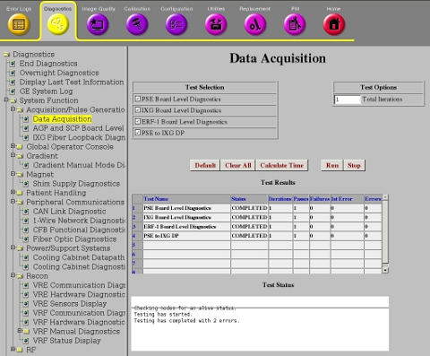
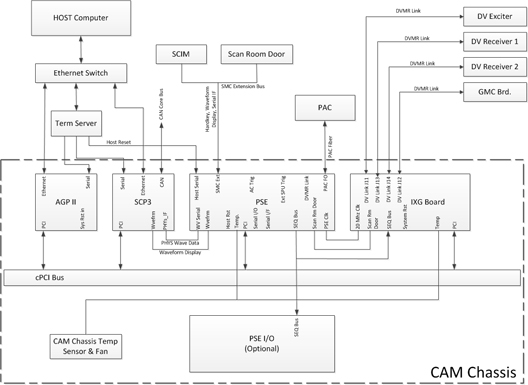

GE Exclusive Use Only
Direction 5670006, Rev# 1
Discovery MR750w GEM Service Methods
Module Version 2.0, Version Date 10/12/11
GE Exclusive Use Only |
Diagnostics >> System Function >> Acquisition/Pulse Generation >> Data Acquisition
Diagnostics >> Hardware Location >> PGR Cabinet >> CAM >> Data Acquisition
Illustration 1: PSE Board Level Diagnostic

The PSE Board Level Diagnostic tests the functionality of the board. It does not test any interface to the board.
The items highlighted in green in Illustration 2 show what is tested.
None
The items highlighted in green in the following block diagrams show what is tested.
Illustration 2: PSE Block Diagram

To view or print a larger view of Illustration 1, click  .
.
Click [Calculate Time] to get an estimate of the time it will take to run the selected diagnostics.
| NOTE: | Short vs. Long Tests: The short test performs a walking ones and walking zeroes pattern whereas the long test will perform a walking ones, walking zeroes, 0xaaaa, 0x5555, and possibly other patterns. As a result, selecting the long test will generally provide a longer and more exhaustive test. If the problem is highly intermittent then it may be desirable to run a long test. |
Click [Run] to initiate the test.
| NOTE: | Do not change the Test Options settings from their default settings unless instructed to do so by a GE Healthcare engineer. There are very few circumstances when these settings ever need to be changed. |
The PSE Board Level Diagnostics tests the functionality of the board itself. See PSE to IXG DP Diagnostics Step and the PSE to RRX+DTX DP diagnostic to test the interface between the PSE Board to the XGD (gradient), DTX (exciters), and RRX (receivers).
Output values are Pass or Fail. In the event of failure, the details of the failure can be found in the GE System Log.
While, in the case of errors, you can click the 1st Error number to see the nature of the error, it is recommended that you view the GE System Log to view all the recorded errors.
| ||||
| Prior to scanning, a TPS reset is required. | ||||